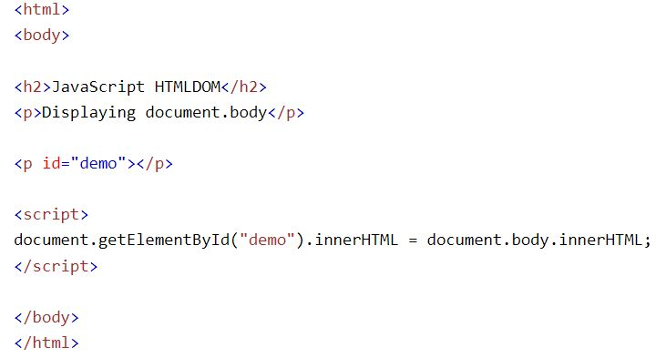
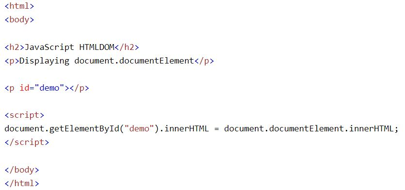

Integrantes:
Alvarado Carolina, Moromenacho Mishel, Velasco Karen
Integrantes:
Alvarado Carolina, Moromenacho Mishel, Velasco Karen
De acuerdo con el estándar DOM HTML de W3C, todo en un documento HTML es un nodo:
- Todo el documento es un nodo de documento.
- Cada elemento HTML es un nodo de elemento
- El texto dentro de los elementos HTML son nodos de texto.
- Cada atributo HTML es un nodo de atributo (obsoleto)
- Todos los comentarios son nodos de comentarios

Con HTML DOM, se puede acceder a todos los nodos del árbol de nodos mediante JavaScript.
Se pueden crear nuevos nodos y todos los nodos se pueden modificar o eliminar.
Los nodos del árbol de nodos tienen una relación jerárquica entre sí.
Los términos padre, hijo y hermano se utilizan para describir las relaciones.
En un árbol de nodos, el nodo superior se llama raíz (o nodo raíz)
Cada nodo tiene exactamente un padre, excepto la raíz (que no tiene padre)
Un nodo puede tener varios hijos
Los hermanos (hermanos o hermanas) son nodos con el mismo padre

En este tutorial usamos la propiedad innerHTML para recuperar el contenido de un elemento HTML.
Sin embargo, aprender los otros métodos anteriores es útil para comprender la estructura del árbol y la navegación del DOM.
Hay dos propiedades especiales que permiten el acceso al documento completo:
- document.body - El cuerpo del documento
- document.documentElement - El documento completo
Ejemplo
Ejemplo
